Aakash Goyal
Bombay, India
Full stack developer, Goal to build an app used by at least a million people
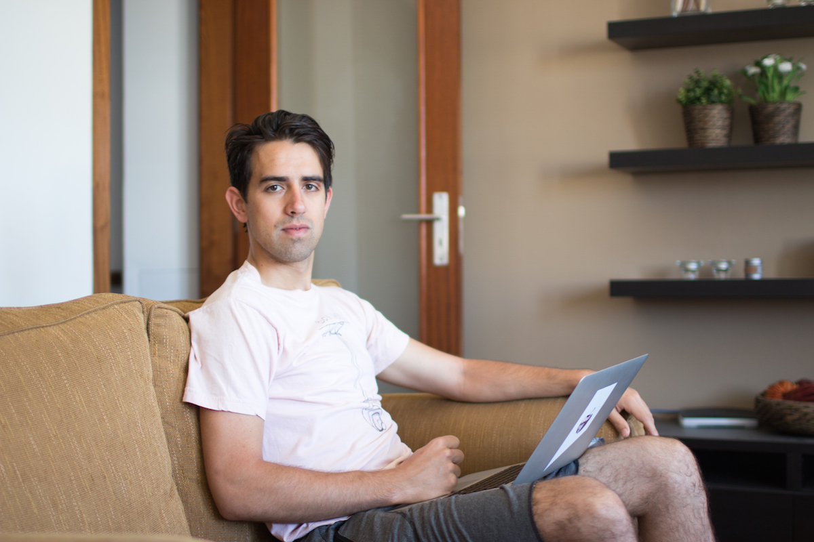Aaron Schleichkorn
Ravenswood, Chicago, USA
Bike designer, developer and svg artist, Loves talking to strangers, Makes a mean fiber bowl
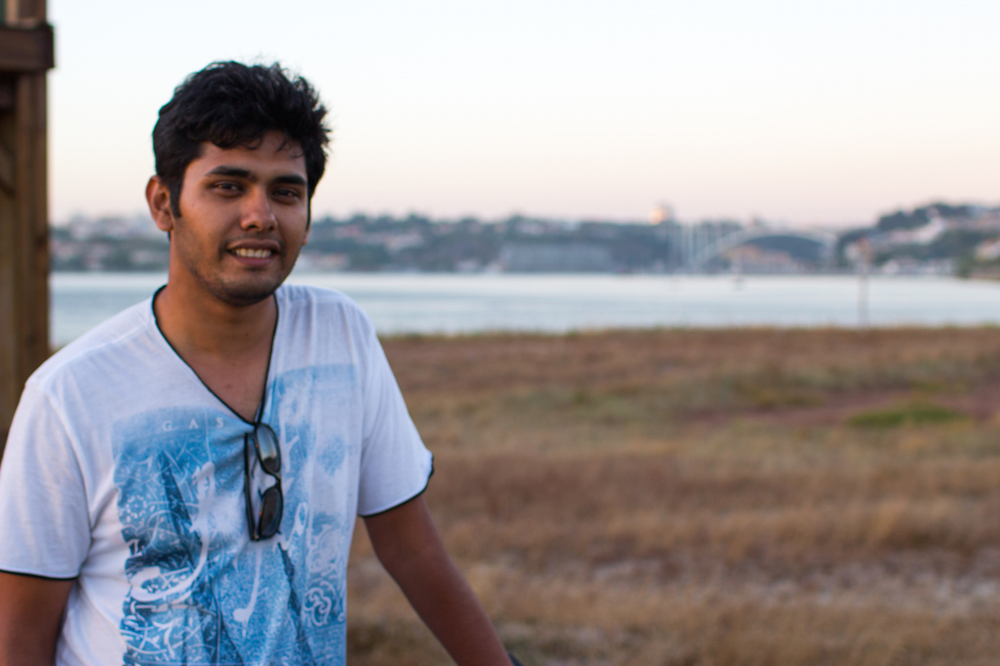Agni Kumar Nath
Bangalore, India
Developer and astronomer, Plays the ukulele, Music geek

Alexey Komissarouk
Tel Aviv, Israel
Developer and founder, World traveler

Andrei Mitrea
(guest illustration: Dale Johnson)
Bucharest, Romania
Developer, Avid runner, Trivia night frequenter
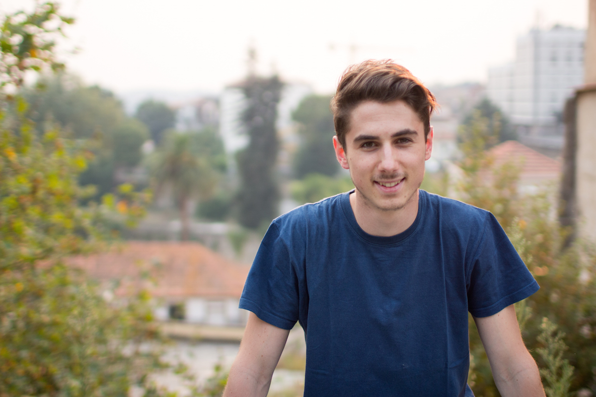Antoine Rondelet
Paris, France
Student and Java developer, Wants to change the Finance world, B-boy
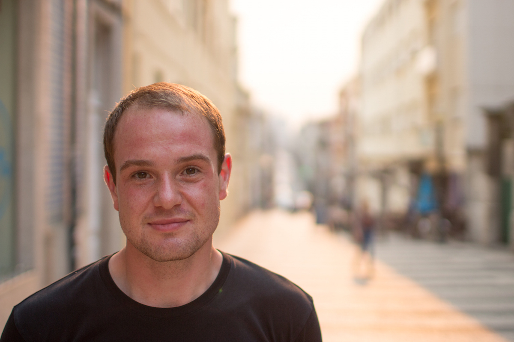Anton Oparin
Developer, Avid cyclist, All about loyalty
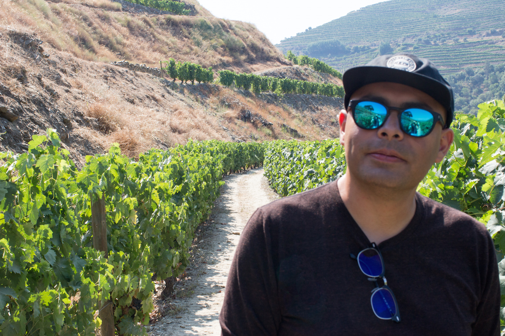Bernardo Salinas
San Antonio, TX, USA
Project manager, Writer, Makes a mean margarita sans ice
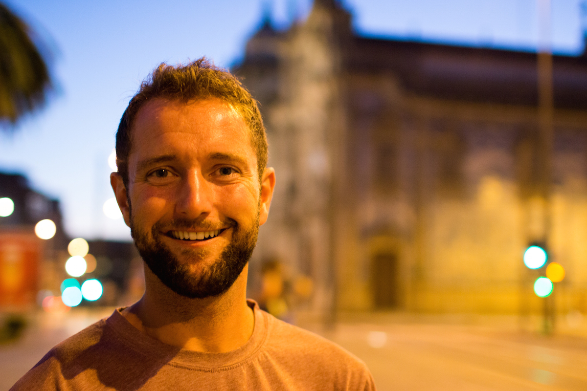Brad Stachurski
Fort Collins, CO, USA
Free spirit, Mediation and yoga guru, Ultra marathoner on the pursuit of adventure, Living a summer of yes
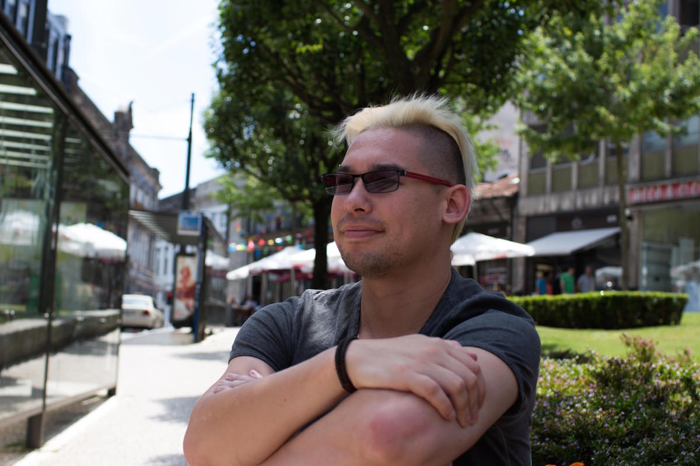Carl Sue
Las Angeles, CA, USA
Hacker and security engineer, Motorcycles and tattoos, Aka Cobolt Blue

Cayla Green
Austin, TX, USA
Ruby Developer, So Austin, Developer lineage, Rollerskate queen, Crochets

Connor Savage
New York City, NY, USA
Dev lead, The beard is boss, Closes out karaoke

Courtney Machi
San Francisco, CA, USA
Product Manager and coder, Yoga teacher, Potluck initiator, Rosé aficionado and Taxca discoverer

Daisy Jing
Las Angeles, CA, USA
Small business owner and Youtuber, Not so camera shy, Loves laser lights at the dance club
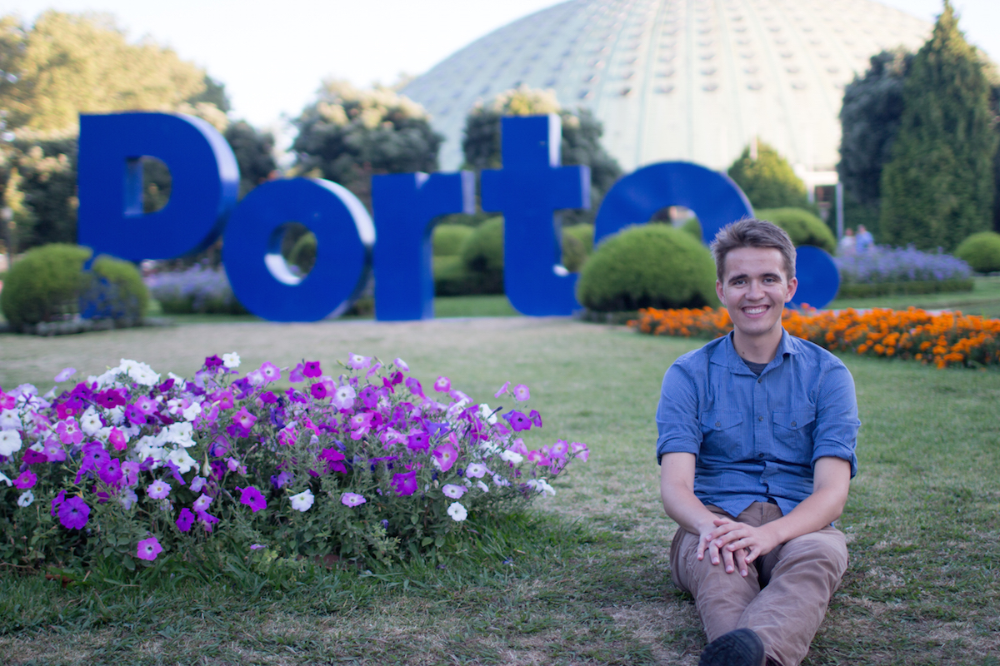Dakota Murray
Asheville, NC, USA
PhD student and data scientist, Affectionately know as Dacora, The bees knees
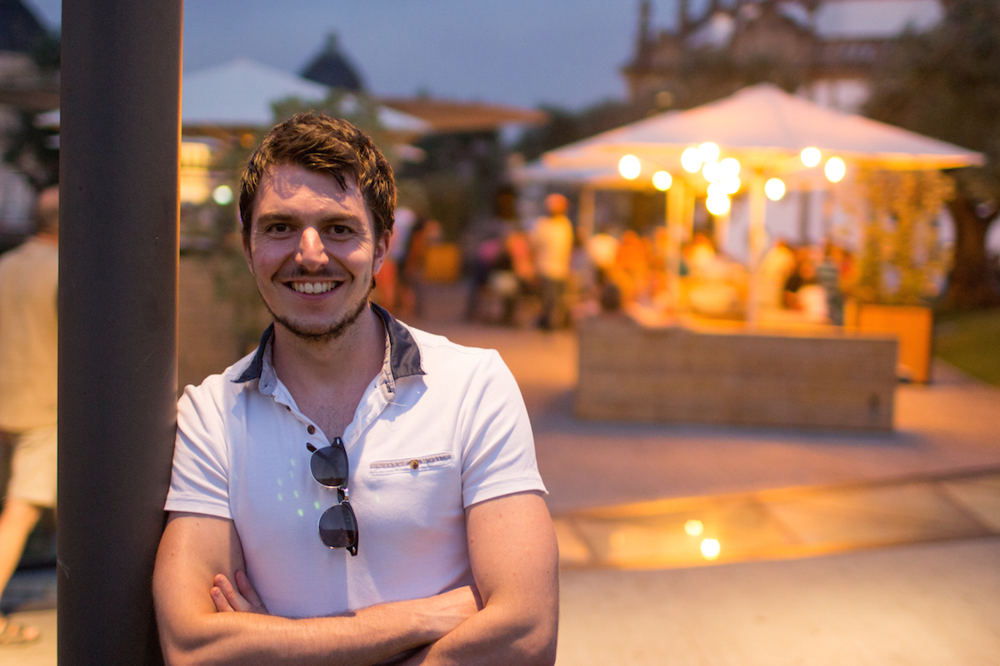Dale Johnson
Cardiff, Wales
Illustrator and teacher, Banter Bus Coordinator, King chunderer

Dorian Amouroux
Bordeaux, France
Web developer and student, Going to California, Long Beach, Survives seafood restaurants (he’s allergic but still goes with us), Photoshop pro

Ellen Koenig
Berlin, Germany
Data Engineer, Best shirts of the trip, Berlin native
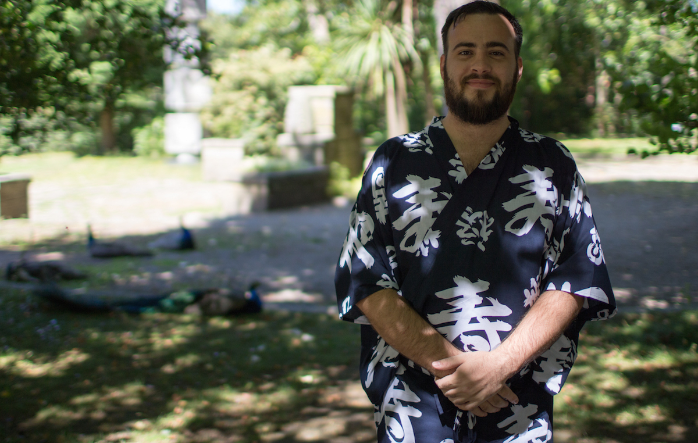Nicolas (Foca) Sanguinetti
Montevideo, Uruguay
Freelance developer and geek, God of the seals, Ultimate Foodie, It's FIIIIINNNNEEEE
Grayson Manley
Chicago, IL, USA
Developer, Acrobat, ex-gymanst, and circus artist, Learning Japanese
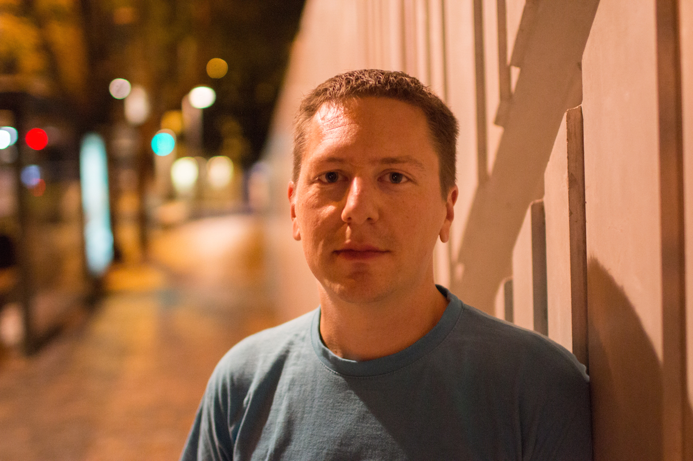Haiko Shol
Berlin, Germany
Freelance software developer, Aspiring meditator, Pragmatist

Henry Snow
New York City, NY, USA
Creating abroad, YouTuber, Japanese speaker

Hylke Visser
The Hague, Netherlands
Backend developer, Windsurfer

Iva Vigan
Zadar, Croatia
Writer and teacher, Cooks us delicious food, Teaches Spencer useful phrases
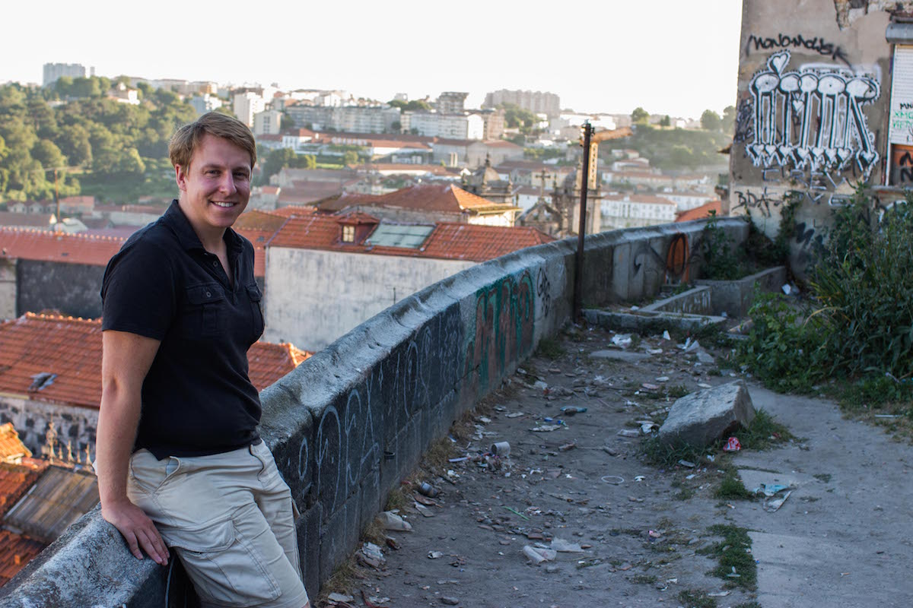Iskender Piyale-Sheard
Toronto, ON, Canada
Trip Facilitator and teacher, May be seen wearing a horse head, Remote as fuck

James Vanneman
(guest photograph: Johan Stokking)
Boston, MA, USA
Haskell developer and photographer, Marathon legs (always hydrated), Super bock die hard, Made this website!!
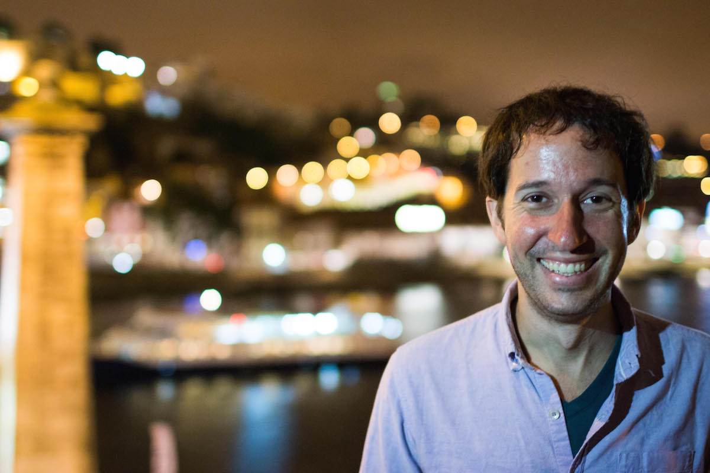Jay Meistrich
San Diego, CA, USA
Founder and developer, Worlds most famous digital nomad, Only wears solid colors
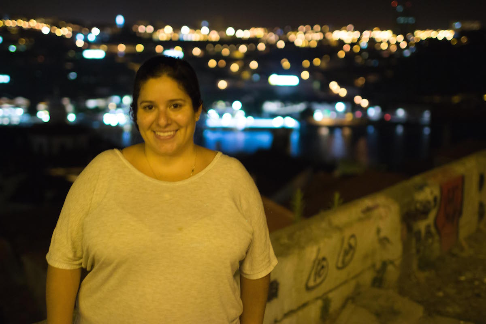Jenn Vargas
New Jersey, USA
Freelance product consultant, Gelato aficionado, Hitting 30 before 30

Jess Warren
Austin, TX, USA
Freelance designer, Card game creator, Breakfast taco lover, Daily videographer
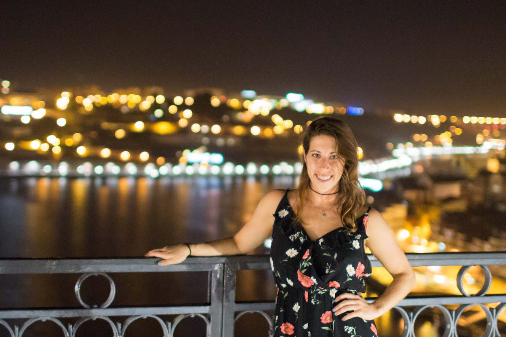Jessica Simon
New York City, NY, USA
Developer, Cheerleader 4 Lyf

Johan Stokking
Amsterdam, Netherlands
Tech Lead and cofounder, Boy band lead, Loves white pants

Ken Hu
Philladelphia, PA, USA
Python developer and data scientist, Fashion artist, Dress shoes and bowties for days, Professional networker

Laurens Slats
Amsterdam, Netherlands
Community Manager, Student, Runs for fun

Leif Terje Fonnes
Bergen, Norway
Full stack developer, Jack-of-all, Loves sailing, Brought the good weather with him

Lola Rigaut-Luczak
Amiens, France
Hacker and developer, Proof of work chain advocate, Kitesurfer, Finds us all the good music
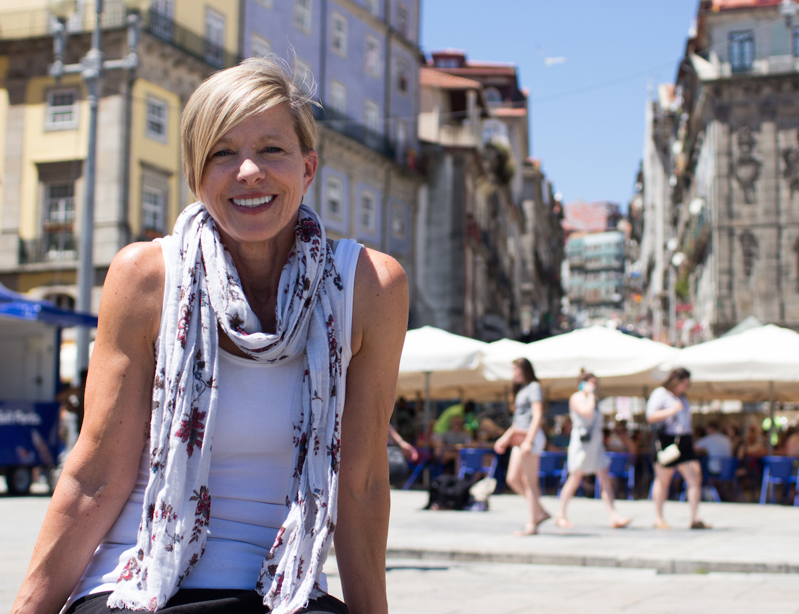Lori Tillery
Carrboro, NC, USA
Full stack developer, Professional badass, ex-Navy, Fitness enthusiast

Lucas Mancini
Buenos Aires, Argentina
Engineer, Warmest smile, Won't get Facebook

Luka Sirac
Sibenik, Croatia
Angular developer, Defends fanny packs to the death, Prefers straightforward communication, Dog lover
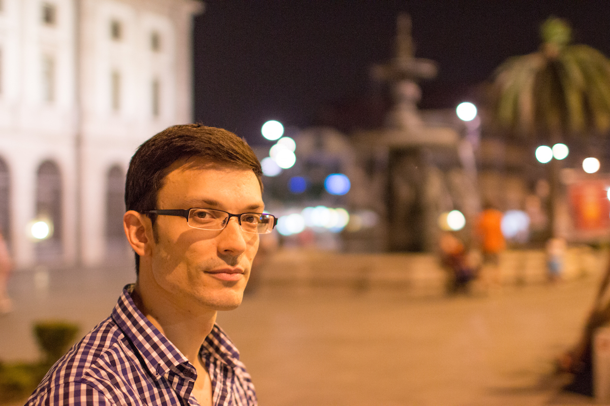Michael Hackner
Bethesda, MD, USA
Java developer, Can hold eye contact, Curly quotation advocate
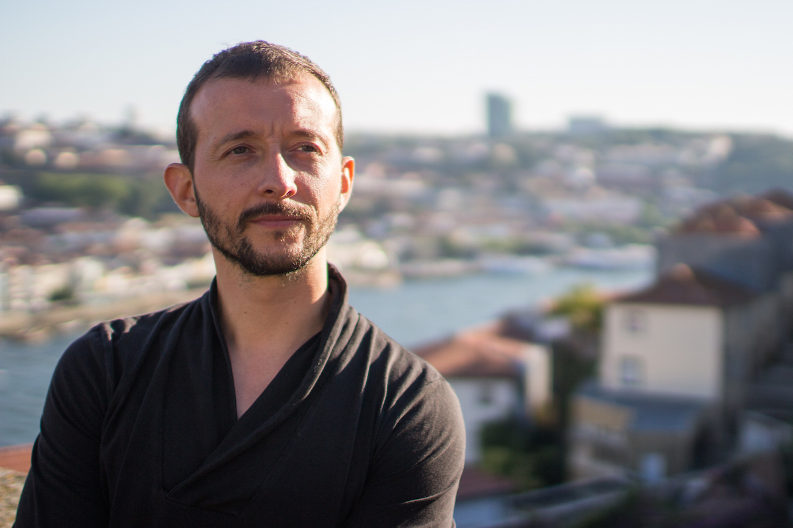Michele Simonato
Padua, Italy
Serial entrepreneur, Zen Master squirrel jumper, Fuck Brexit

Miranda Bishop
Cardiff, Wales
Social Media Consultant, Rave dancer, Makes a mean English Country Summer, Infectious laugh

Morgan Willowgate
Vancouver, BC, CA
Developer, Animal lover, Canada proud
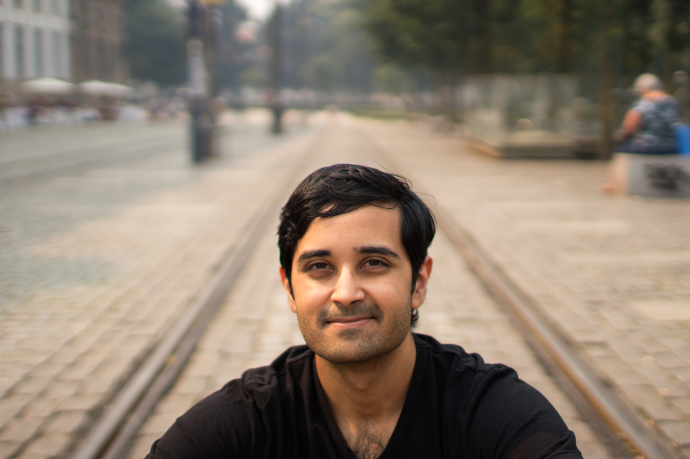Pramit Rashinkar
San Diego, CA, USA
Product Developer, Ketogenic lifestyle, First in, last out
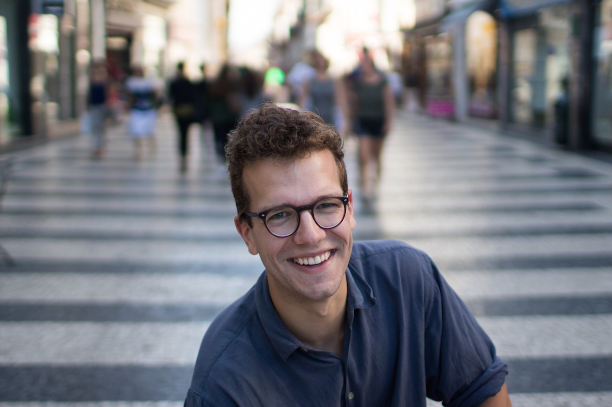Romeo Van Snick
Antwerpren, Belgium
Developer and& physicist, Loves to bike, DJ by night

Richard Littauer
Cambridge, MA, USA
UI/UX developer, Birdman, Only wears hiking boots, The user is (not) drunk

Sam Hogg
Auckland, New Zealand
Healthcare and Data Viz developer, Drives the banter bus, Australian immigrating to the US, Cafe hunter

Sib Mahapatra
New York City, NY, USA
BizDev, Crossing Mongolia, Aspiring writer and storyteller
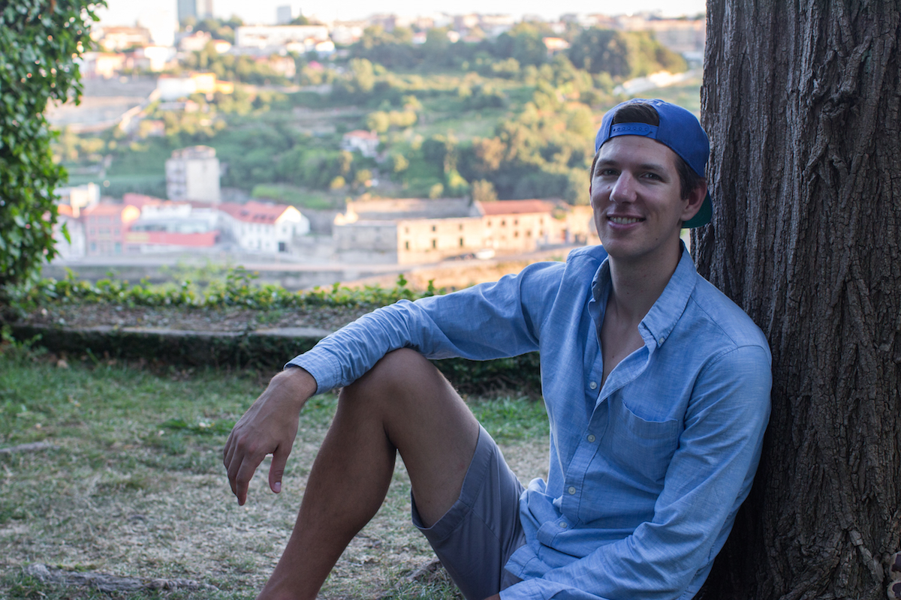Spencer Jentzsch
Madison, WI, USA
Trip Facilitator, Sangria aficionado, Can't go anywhere without his signature hat, Korean speaker, Tapabento advocate

Tom Ruttle
London, England
Full stack developer, City walker (hates uber), Dryer sense of humor, We caught him smiling a few times

Wendy Hu
Sydney, Australia
Business entrepreneur, Newly minted digital nomad, Can eat more than Foca, Ballet flats for days

Wessel Versluis
Amsterdam, Netherlands
Freelance designer and student, Master of mixing floral prints, Yo mama

Whitney Perkins
Fayetteville, AR, USA
Data analyst and manager, Southern girl, Loves college football, Will not budge on eating vegetables

Wienke Giezeman
Amsterdam, Netherlands
Initiator and cofounder, Rocks a baby bjorn like you've never seen, Leads the boyband at karaoke, Dad dance moves
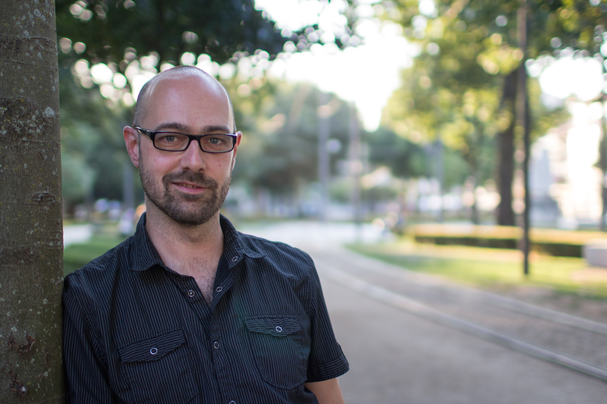Wouter Vernaillen
Ghent, Belgium
Developer and founder, Belgian beer expert, DevNomad

Zach Waterfield
Barrie, ON, Canada
Developer, student and CTO, Loves snackdicks, Blogger, Luscious locks, Really nice (Canadian)

Zernyu Chou
Chicaco, IL, USA
Full stack developer, Fish tank expert, Extreme cyclist, Neapolitan legs